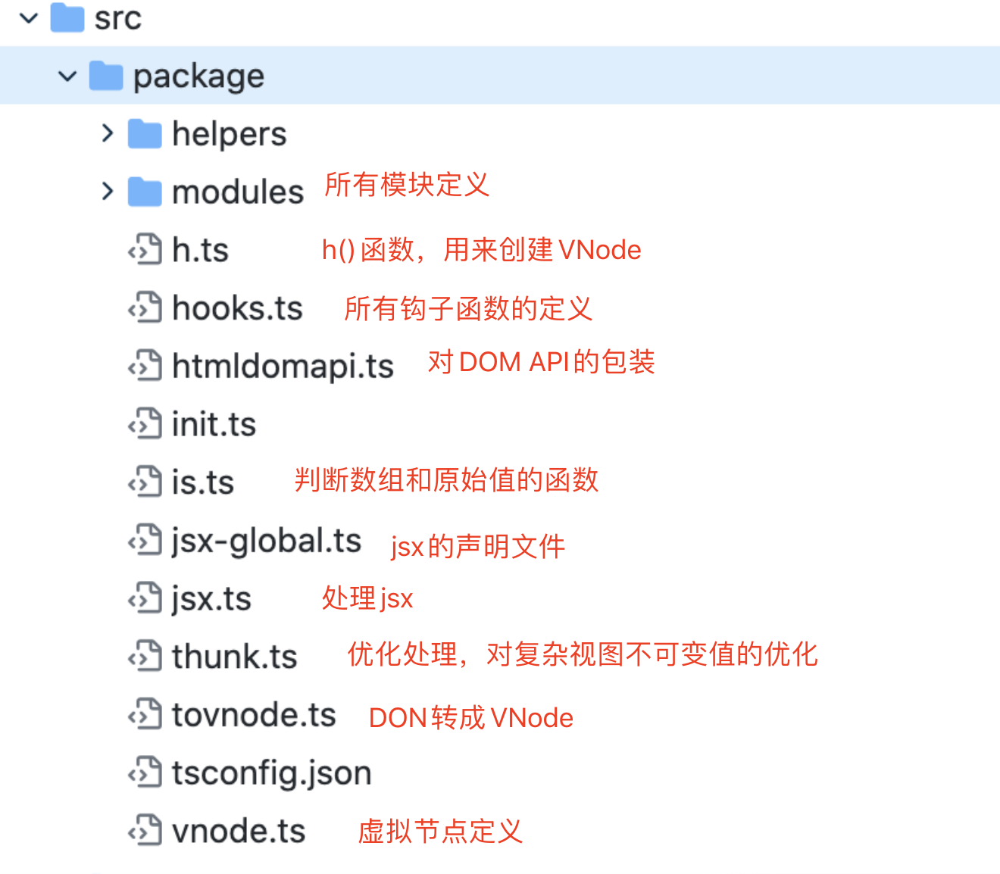
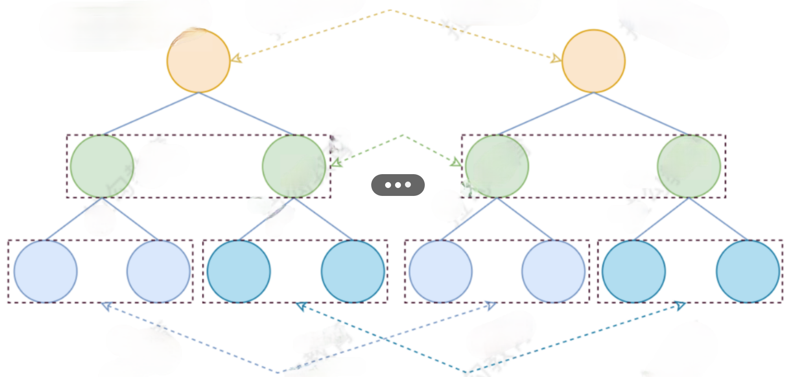
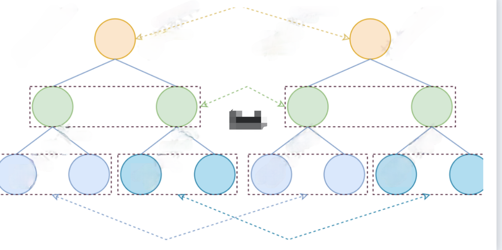
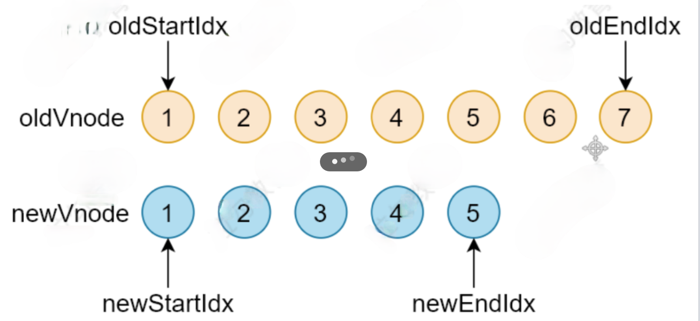
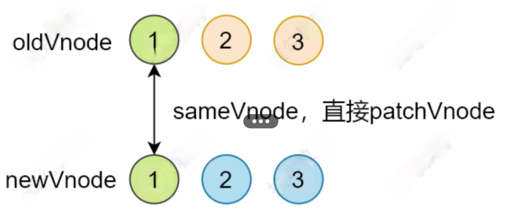
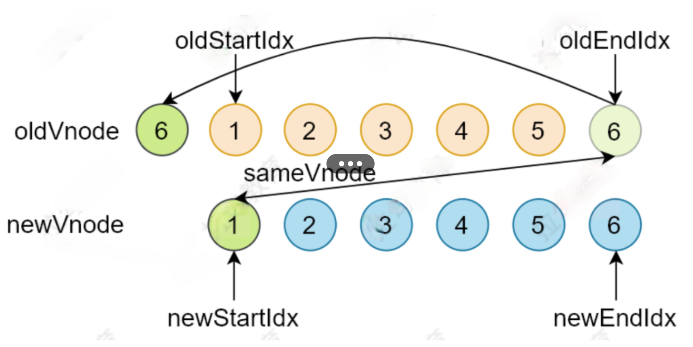
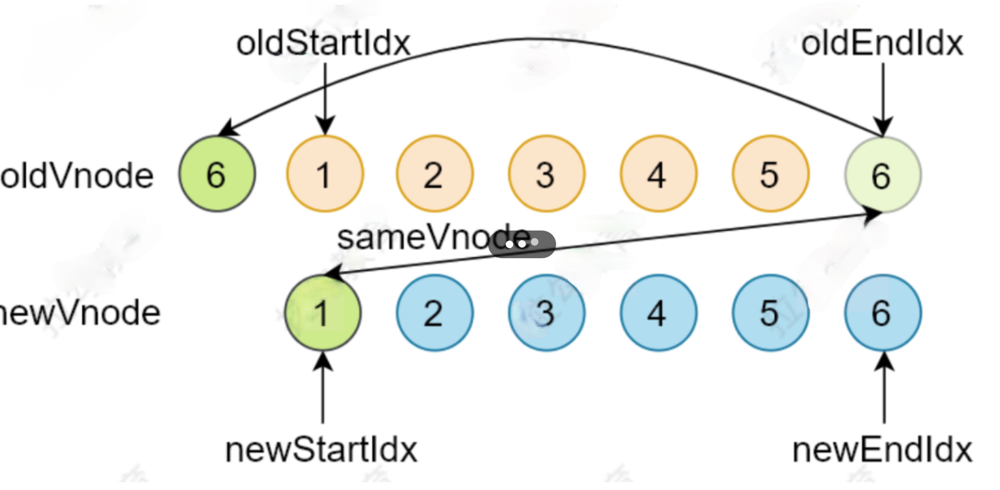

# 什么是 Virtual DOM
Virtual DOM(虚拟 DOM)，是由普通的JS对象来描述DOM对象，因为不是真实的DOM对象，所以叫Virtual DOM
let element = document.querySelector('#app')
let s = ''
for (var key in element) {
s += key + ','
}
console.log(s)
// 打印结果 align,title,lang,translate,dir,hidden,accessKey,draggable,spellcheck,aut ocapitalize,contentEditable,isContentEditable,inputMode,offsetParent,off setTop,offsetLeft,offsetWidth,offsetHeight,style,innerText,outerText,onc opy,oncut,onpaste,onabort,onblur,oncancel,oncanplay,oncanplaythrough,onc hange,onclick,onclose,oncontextmenu,oncuechange,ondblclick,ondrag,ondrag end,ondragenter,ondragleave,ondragover,ondragstart,ondrop,ondurationchan ge,onemptied,onended,onerror,onfocus,oninput,oninvalid,onkeydown,onkeypr ess,onkeyup,onload,onloadeddata,onloadedmetadata,onloadstart,onmousedown ,onmouseenter,onmouseleave,onmousemove,onmouseout,onmouseover,onmouseup, onmousewheel,onpause,onplay,onplaying,onprogress,onratechange,onreset,on resize,onscroll,onseeked,onseeking,onselect,onstalled,onsubmit,onsuspend ,ontimeupdate,ontoggle,onvolumechange,onwaiting,onwheel,onauxclick,ongot pointercapture,onlostpointercapture,onpointerdown,onpointermove,onpointe rup,onpointercancel,onpointerover,onpointerout,onpointerenter,onpointerl eave,onselectstart,onselectionchange,onanimationend,onanimationiteration ,onanimationstart,ontransitionend,dataset,nonce,autofocus,tabIndex,click ,focus,blur,enterKeyHint,onformdata,onpointerrawupdate,attachInternals,n amespaceURI,prefix,localName,tagName,id,className,classList,slot,part,at tributes,shadowRoot,assignedSlot,innerHTML,outerHTML,scrollTop,scrollLef t,scrollWidth,scrollHeight,clientTop,clientLeft,clientWidth,clientHeight ,attributeStyleMap,onbeforecopy,onbeforecut,onbeforepaste,onsearch,eleme ntTiming,previousElementSibling,nextElementSibling,children,firstElement Child,lastElementChild,childElementCount,onfullscreenchange,onfullscreen error,onwebkitfullscreenchange,onwebkitfullscreenerror,setPointerCapture ,releasePointerCapture,hasPointerCapture,hasAttributes,getAttributeNames ,getAttribute,getAttributeNS,setAttribute,setAttributeNS,removeAttribute ,removeAttributeNS,hasAttribute,hasAttributeNS,toggleAttribute,getAttrib uteNode,getAttributeNodeNS,setAttributeNode,setAttributeNodeNS,removeAtt ributeNode,closest,matches,webkitMatchesSelector,attachShadow,getElement sByTagName,getElementsByTagNameNS,getElementsByClassName,insertAdjacentE lement,insertAdjacentText,insertAdjacentHTML,requestPointerLock,getClien tRects,getBoundingClientRect,scrollIntoView,scroll,scrollTo,scrollBy,scr ollIntoViewIfNeeded,animate,computedStyleMap,before,after,replaceWith,re move,prepend,append,querySelector,querySelectorAll,requestFullscreen,web kitRequestFullScreen,webkitRequestFullscreen,createShadowRoot,getDestina tionInsertionPoints,ELEMENT_NODE,ATTRIBUTE_NODE,TEXT_NODE,CDATA_SECTION_ NODE,ENTITY_REFERENCE_NODE,ENTITY_NODE,PROCESSING_INSTRUCTION_NODE,COMME NT_NODE,DOCUMENT_NODE,DOCUMENT_TYPE_NODE,DOCUMENT_FRAGMENT_NODE,NOTATION _NODE,DOCUMENT_POSITION_DISCONNECTED,DOCUMENT_POSITION_PRECEDING,DOCUMEN T_POSITION_FOLLOWING,DOCUMENT_POSITION_CONTAINS,DOCUMENT_POSITION_CONTAI NED_BY,DOCUMENT_POSITION_IMPLEMENTATION_SPECIFIC,nodeType,nodeName,baseU RI,isConnected,ownerDocument,parentNode,parentElement,childNodes,firstCh ild,lastChild,previousSibling,nextSibling,nodeValue,textContent,hasChild Nodes,getRootNode,normalize,cloneNode,isEqualNode,isSameNode,compareDocu mentPosition,contains,lookupPrefix,lookupNamespaceURI,isDefaultNamespace ,insertBefore,appendChild,replaceChild,removeChild,addEventListener,remo veEventListener,dispatchEvent
- 可以使用
Virtual DOM来描述真实DOM
{
sel: "div",
data: {},
children: undefined,
text: "Hello Virtual DOM",
elm: undefined,
key: undefined
}
# 为什么使用 Virtual DOM
- 手动操作
DOM比较麻烦，还需要考虑浏览器兼容性问题，虽然有jQuery等库简化DOM操作，但是随着项目的复杂 DOM 操作复杂提升 - 为了简化
DOM的复杂操作于是出现了各种MVVM框架，MVVM框架解决了视图和状态的同步问题 - 为了简化视图的操作我们可以使用模板引擎，但是模板引擎没有解决跟踪状态变化的问题，于是
Virtual DOM出现了 Virtual DOM的好处是当状态改变时不需要立即更新 DOM，只需要创建一个虚拟树来描述DOM，Virtual DOM内部将弄清楚如何有效(diff)的更新DOM- 虚拟
DOM可以维护程序的状态，跟踪上一次的状态 - 通过比较前后两次状态的差异更新真实
DOM
# 虚拟 DOM 的作用
- 维护视图和状态的关系
- 复杂视图情况下提升渲染性能
- 除了渲染
DOM以外，还可以实现SSR(Nuxt.js/Next.js)、原生应用(Weex/React Native)、小程序(mpvue/uni-app)等

# Virtual DOM 库
- Snabbdom (opens new window)
Vue 2.x内部使用的Virtual DOM就是改造的Snabbdom- 通过模块可扩展
- 源码使用
TypeScript开发 - 最快的
Virtual DOM之一
- virtual-dom (opens new window)
# Snabbdom 基本使用
# 创建项目
# 创建项目目录
md snabbdom-demo
# 进入项目目录
cd snabbdom-demo
# 创建 package.json yarn init -y
# 本地安装 parcel
yarn add parcel-bundler
配置 package.json 的 scripts
"scripts": {
"dev": "parcel index.html --open", "build": "parcel build index.html"
}
创建目录结构

yarn add snabbdom
import{init,h,thunk}from'snabbdom'
snabbdom的核心仅提供最基本的功能，只导出了三个函数init()、h()、thunk()
init()是一个高阶函数，返回patch()h()返回虚拟节点VNode，这个函数我们在使用Vue.js的时候见过
new Vue({
router,
store,
render: h => h(App)
}).$mount('#app')
thunk()是一种优化策略，可以在处理不可变数据时使用
注意:导入时候不能使用
import snabbdom from 'snabbdom'。原因:node_modules/src/snabbdom.ts末尾导出使用的语法是export导出API，没有使用export default导出默认输出

# 基本使用
例子1
import { h, init } from 'snabbdom'
// 1. hello world
// 参数：数组，模块
// 返回值：patch函数，作用对比两个vnode的差异更新到真实DOM
let patch = init([])
// 第一个参数：标签+选择器
// 第二个参数：如果是字符串的话就是标签中的内容
let vnode = h('div#container.cls', {
hook: {
init (vnode) {
console.log(vnode.elm)
},
create (emptyVnode, vnode) {
console.log(vnode.elm)
}
}
}, 'Hello World')
let app = document.querySelector('#app')
// 第一个参数：可以是DOM元素，内部会把DOM元素转换成VNode
// 第二个参数：VNode
// 返回值：VNde
let oldVnode = patch(app, vnode)
// 假设的时刻
vnode = h('div', 'Hello Snabbdom')
patch(oldVnode, vnode)
例子2
// 2. div中放置子元素 h1,p
import { h, init } from 'snabbdom'
let patch = init([])
let vnode = h('div#container', [
h('h1', 'Hello Snabbdom'),
h('p', '这是一个p标签')
])
let app = document.querySelector('#app')
let oldVnode = patch(app, vnode)
setTimeout(() => {
vnode = h('div#container', [
h('h1', 'Hello World'),
h('p', 'Hello P')
])
patch(oldVnode, vnode)
// 清空页面元素 -- 错误
// patch(oldVnode, null)
patch(oldVnode, h('!'))
}, 2000);
例子3 debug-patchVnode
import { h, init } from 'snabbdom'
let patch = init([])
// 首次渲染
let vnode = h('div', 'Hello World')
let app = document.querySelector('#app')
let oldVnode = patch(app, vnode)
// patchVnode 的执行过程
vnode = h('div', 'Hello Snabbdom')
patch(oldVnode, vnode)
例子4 debug-updateChildren
import { h, init } from 'snabbdom'
let patch = init([])
// 首次渲染
let vnode = h('ul', [
h('li', '首页'),
h('li', '视频'),
h('li', '微博')
])
let app = document.querySelector('#app')
let oldVnode = patch(app, vnode)
// updateChildren 的执行过程
vnode = h('ul', [
h('li', '首页'),
h('li', '微博'),
h('li', '视频')
])
patch(oldVnode, vnode)
例子5 debug-updateChildren-key
import { h, init } from 'snabbdom'
let patch = init([])
// 首次渲染
let vnode = h('ul', [
h('li', { key: 'a' }, '首页'),
h('li', { key: 'b' }, '视频'),
h('li', { key: 'c' }, '微博')
])
let app = document.querySelector('#app')
let oldVnode = patch(app, vnode)
// updateChildren 的执行过程
vnode = h('ul', [
h('li', { key: 'a' }, '首页'),
h('li', { key: 'c' }, '微博'),
h('li', { key: 'b' }, '视频')
])
patch(oldVnode, vnode)
# 模块
Snabbdom的核心库并不能处理元素的属性/样式/事件等，如果需要处理的话，可以使用模块
常用模块
官方提供了 6 个模块
attributes- 设置
DOM元素的属性，使用setAttribute () - 处理布尔类型的属性
- 设置
props- 和
attributes模块相似，设置DOM元素的属性element[attr] = value - 不处理布尔类型的属性
- 和
class- 切换类样式
- 注意:给元素设置类样式是通过
sel选择器
dataset- 设置
data-*的自定义属性eventlisteners - 注册和移除事件
- 设置
style- 设置行内样式，支持动画
delayed/remove/destroy
模块使用
模块使用步骤:
- 导入需要的模块
init()中注册模块- 使用
h()函数创建VNode的时候，可以把第二个参数设置为对象，其他参数往后移
import { init, h } from 'snabbdom'
// 1. 导入模块
import style from 'snabbdom/modules/style'
import eventlisteners from 'snabbdom/modules/eventlisteners'
// 2. 注册模块
let patch = init([
style,
eventlisteners
])
// 3. 使用 h() 函数的第二个参数传入模块需要的数据（对象）
let vnode = h('div', {
style: {
backgroundColor: 'red'
},
on: {
click: eventHandler
}
}, [
h('h1', 'Hello Snabbdom'),
h('p', '这是p标签')
])
function eventHandler () {
console.log('点击我了')
}
let app = document.querySelector('#app')
let oldVnode = patch(app, vnode)
vnode = h('div', 'hello')
patch(oldVnode, vnode)
# Snabbdom 源码解析
# Snabbdom 的核心
- 使用
h()函数创建 JavaScript 对象(VNode)描述真实 DOM init()设置模块，创建patch()patch()比较新旧两个VNode- 把变化的内容更新到真实
DOM树上
Snabbdom 源码
源码地址: https://github.com/snabbdom/snabbdom
src 目录结构

# h 函数
h()函数介绍: 在使用Vue的时候见过h()函数
new Vue({
router,
store,
render: h => h(App)
}).$mount('#app')
h()函数最早见于hyperscript，使用 JavaScript 创建超文本- Snabbdom 中的
h()函数不是用来创建超文本，而是创建VNode
函数重载
- 概念
- 参数个数或类型不同的函数
JavaScript中没有重载的概念TypeScript中有重载，不过重载的实现还是通过代码调整参数- 重载的示意
function add (a, b) {
console.log(a + b)
}
function add (a, b, c) {
console.log(a + b + c)
}
add(1, 2)
add(1, 2, 3)
源码位置:
src/h.ts
// h函数的重载
export function h (sel: string): VNode
export function h (sel: string, data: VNodeData | null): VNode
export function h (sel: string, children: VNodeChildren): VNode
export function h (sel: string, data: VNodeData | null, children: VNodeChildren): VNode
export function h (sel: any, b?: any, c?: any): VNode {
let data: VNodeData = {}
let children: any
let text: any
let i: number
// 处理参数，实现重载的机制
if (c !== undefined) {
// 处理三个参数的情况
// sel、data、children/text
if (b !== null) {
data = b
}
if (is.array(c)) {
children = c
// 如果 c 是字符串或者数字
} else if (is.primitive(c)) {
text = c
} else if (c && c.sel) {
children = [c]
}
} else if (b !== undefined && b !== null) {
// 处理两个参数的情况
if (is.array(b)) {
children = b
// 如果 b 是字符串或者数字
} else if (is.primitive(b)) {
text = b
// 如果 b 是 VNode
} else if (b && b.sel) {
children = [b]
} else { data = b }
}
if (children !== undefined) {
// 处理 children 中的原始值(string/number)
for (i = 0; i < children.length; ++i) {
// 如果 child 是 string/number，创建文本节点
if (is.primitive(children[i])) children[i] = vnode(undefined, undefined, undefined, children[i], undefined)
}
}
if (
sel[0] === 's' && sel[1] === 'v' && sel[2] === 'g' &&
(sel.length === 3 || sel[3] === '.' || sel[3] === '#')
) {
// 如果是 svg，添加命名空间
addNS(data, children, sel)
}
// 返回 VNode
return vnode(sel, data, children, text, undefined)
};
// 导出模块
export default h;
# VNode
一个
VNode就是一个虚拟节点用来描述一个DOM元素，如果这个VNode有children就是Virtual DOM
源码位置: src/vnode.ts
export interface VNodeData {
props?: Props
attrs?: Attrs
class?: Classes
style?: VNodeStyle
dataset?: Dataset
on?: On
hero?: Hero
attachData?: AttachData
hook?: Hooks
key?: Key
ns?: string // for SVGs
fn?: () => VNode // for thunks
args?: any[] // for thunks
is?: string // for custom elements v1
[key: string]: any // for any other 3rd party module
}
export interface VNode {
// 选择器
sel: string | undefined
// 节点数据:属性/样式/事件等
data: VNodeData | undefined
// 子节点，和 text 只能互斥
children: Array<VNode | string> | undefined
// 记录 vnode 对应的真实 DOM
elm: Node | undefined
// 节点中的内容，和 children 只能互斥
text: string | undefined
// 优化用
key: Key | undefined
}
export function vnode (sel: string | undefined,
data: any | undefined,
children: Array<VNode | string> | undefined,
text: string | undefined,
elm: Element | Text | undefined): VNode {
const key = data === undefined ? undefined : data.key
return { sel, data, children, text, elm, key }
}
# snabbdom
patch(oldVnode, newVnode)- 打补丁，把新节点中变化的内容渲染到真实
DOM，最后返回新节点作为下一次处理的旧节点 - 对比新旧
VNode是否相同节点(节点的key和sel相同) - 如果不是相同节点，删除之前的内容，重新渲染
- 如果是相同节点，再判断新的
VNode是否有text，如果有并且和oldVnode的text不同，直接更 新文本内容 - 如果新的
VNode有children，判断子节点是否有变化，判断子节点的过程使用的就是diff算法 diff过程只进行同层级比较

# init
- 功能:
init(modules, domApi)，返回patch()函数(高阶函数) - 为什么要使用高阶函数?
- 因为
patch()函数再外部会调用多次，每次调用依赖一些参数，比如:modules/domApi/cbs - 通过高阶函数让
init()内部形成闭包，返回的patch()可以访问到modules/domApi/cbs，而 不需要重新创建
- 因为
init()在返回patch()之前，首先收集了所有模块中的钩子函数存储到cbs对象中
源码位置:
src/init.ts
export function init (modules: Array<Partial<Module>>, domApi?: DOMAPI) {
let i: number
let j: number
const cbs: ModuleHooks = {
create: [],
update: [],
remove: [],
destroy: [],
pre: [],
post: []
}
const api: DOMAPI = domApi !== undefined ? domApi : htmlDomApi
for (i = 0; i < hooks.length; ++i) {
cbs[hooks[i]] = []
for (j = 0; j < modules.length; ++j) {
const hook = modules[j][hooks[i]]
if (hook !== undefined) {
(cbs[hooks[i]] as any[]).push(hook)
}
}
}
...
return function patch (oldVnode: VNode | Element, vnode: VNode): VNode {
let i: number, elm: Node, parent: Node
const insertedVnodeQueue: VNodeQueue = []
for (i = 0; i < cbs.pre.length; ++i) cbs.pre[i]()
if (!isVnode(oldVnode)) {
oldVnode = emptyNodeAt(oldVnode)
}
if (sameVnode(oldVnode, vnode)) {
patchVnode(oldVnode, vnode, insertedVnodeQueue)
} else {
elm = oldVnode.elm!
parent = api.parentNode(elm) as Node
createElm(vnode, insertedVnodeQueue)
if (parent !== null) {
api.insertBefore(parent, vnode.elm!, api.nextSibling(elm))
removeVnodes(parent, [oldVnode], 0, 0)
}
}
for (i = 0; i < insertedVnodeQueue.length; ++i) {
insertedVnodeQueue[i].data!.hook!.insert!(insertedVnodeQueue[i])
}
for (i = 0; i < cbs.post.length; ++i) cbs.post[i]()
return vnode
}
}
# patch
- 功能:
- 传入新旧
VNode，对比差异，把差异渲染到DOM - 返回新的
VNode，作为下一次patch()的oldVnode
- 传入新旧
- 执行过程:
- 首先执行模块中的钩子函数
pre - 如果
oldVnode和vnode相同(key和sel相同)- 调用
patchVnode()，找节点的差异并更新DOM
- 调用
- 如果
oldVnode是DOM元素- 把
DOM元素转换成oldVnode - 调用
createElm()把vnode转换为真实DOM，记录到vnode.elm - 把刚创建的
DOM元素插入到parent中 - 移除老节点
- 触发用户设置的
create钩子函数
- 把
- 首先执行模块中的钩子函数
源码位置:src/snabbdom.ts
return function patch (oldVnode: VNode | Element, vnode: VNode): VNode {
let i: number, elm: Node, parent: Node
// 保存新插入节点的队列，为了触发钩子函数
const insertedVnodeQueue: VNodeQueue = []
// 执行模块的 pre 钩子函数
for (i = 0; i < cbs.pre.length; ++i) cbs.pre[i]()
// 如果 oldVnode 不是 VNode，创建 VNode 并设置 elm
if (!isVnode(oldVnode)) {
// 把 DOM 元素转换成空的 VNode
oldVnode = emptyNodeAt(oldVnode)
}
// 如果新旧节点是相同节点(key 和 sel 相同)
if (sameVnode(oldVnode, vnode)) {
// 找节点的差异并更新 DOM
patchVnode(oldVnode, vnode, insertedVnodeQueue)
} else {
// 如果新旧节点不同，vnode 创建对应的 DOM
// 获取当前的 DOM 元素
elm = oldVnode.elm!
parent = api.parentNode(elm) as Node
// 触发 init/create 钩子函数,创建 DOM
createElm(vnode, insertedVnodeQueue)
if (parent !== null) {
// 如果父节点不为空，把 vnode 对应的 DOM 插入到文档中
api.insertBefore(parent, vnode.elm!, api.nextSibling(elm))
// 移除老节点
removeVnodes(parent, [oldVnode], 0, 0)
}
}
// 执行用户设置的 insert 钩子函数
for (i = 0; i < insertedVnodeQueue.length; ++i) {
insertedVnodeQueue[i].data!.hook!.insert!(insertedVnodeQueue[i])
}
// 执行模块的 post 钩子函数
for (i = 0; i < cbs.post.length; ++i) cbs.post[i]()
// 返回 vnode
return vnode
}
# createElm
功能:
createElm(vnode, insertedVnodeQueue)，返回创建的DOM元素- 创建
vnode对应的DOM元素
执行过程:
首先触发用户设置的
init钩子函数如果选择器是
!，创建评论节点如果选择器为空，创建文本节点
如果选择器不为空
- 解析选择器，设置标签的
id和class属性 - 执行模块的
create钩子函数 - 如果
vnode有children，创建子vnode对应的DOM，追加到DOM树 - 如果
vnode的text值是string/number，创建文本节点并追击到DOM树 - 执行用户设置的
create钩子函数 - 如果有用户设置的
insert钩子函数，把vnode添加到队列中
- 解析选择器，设置标签的
function createElm (vnode: VNode, insertedVnodeQueue: VNodeQueue): Node {
let i: any
let data = vnode.data
if (data !== undefined) {
// 执行用户设置的 init 钩子函数
const init = data.hook?.init
if (isDef(init)) {
init(vnode)
data = vnode.data
}
}
const children = vnode.children
const sel = vnode.sel
if (sel === '!') {
// 如果选择器是!，创建评论节点
if (isUndef(vnode.text)) {
vnode.text = ''
}
vnode.elm = api.createComment(vnode.text!)
} else if (sel !== undefined) {
// Parse selector
// 如果选择器不为空
// 解析选择器
// Parse selector
const hashIdx = sel.indexOf('#')
const dotIdx = sel.indexOf('.', hashIdx)
const hash = hashIdx > 0 ? hashIdx : sel.length
const dot = dotIdx > 0 ? dotIdx : sel.length
const tag = hashIdx !== -1 || dotIdx !== -1 ? sel.slice(0, Math.min(hash, dot)) : sel
const elm = vnode.elm = isDef(data) && isDef(i = data.ns)
? api.createElementNS(i, tag, data)
: api.createElement(tag, data)
if (hash < dot) elm.setAttribute('id', sel.slice(hash + 1, dot))
if (dotIdx > 0) elm.setAttribute('class', sel.slice(dot + 1).replace(/\./g, ' '))
// 执行模块的 create 钩子函数
for (i = 0; i < cbs.create.length; ++i) cbs.create[i](emptyNode, vnode)
// 如果 vnode 中有子节点，创建子 vnode 对应的 DOM 元素并追加到 DOM 树上
if (is.array(children)) {
for (i = 0; i < children.length; ++i) {
const ch = children[i]
if (ch != null) {
api.appendChild(elm, createElm(ch as VNode, insertedVnodeQueue))
}
}
} else if (is.primitive(vnode.text)) {
// 如果 vnode 的 text 值是 string/number，创建文本节点并追加到 DOM 树
api.appendChild(elm, api.createTextNode(vnode.text))
}
const hook = vnode.data!.hook
if (isDef(hook)) {
// 执行用户传入的钩子 create
hook.create?.(emptyNode, vnode)
if (hook.insert) {
// 把 vnode 添加到队列中，为后续执行 insert 钩子做准备
insertedVnodeQueue.push(vnode)
}
}
} else {
// 如果选择器为空，创建文本节点
vnode.elm = api.createTextNode(vnode.text!)
}
// 返回新创建的 DOM
return vnode.elm
}
# patchVnode
- 功能:
patchVnode(oldVnode, vnode, insertedVnodeQueue)- 对比
oldVnode和vnode的差异，把差异渲染到DOM
- 执行过程:
- 首先执行用户设置的
prepatch钩子函数 - 执行
create钩子函数- 首先执行模块的
create钩子函数 - 然后执行用户设置的
create钩子函数
- 首先执行模块的
- 如果
vnode.text未定义- 如果
oldVnode.children和vnode.children都有值- 调用
updateChildren() - 使用
diff算法对比子节点，更新子节点
- 调用
- 如果
vnode.children有值，oldVnode.children无值- 清空
DOM元素 - 调用
addVnodes()，批量添加子节点
- 清空
- 如果
oldVnode.children有值，vnode.children无值- 调用
removeVnodes()，批量移除子节点
- 调用
- 如果
oldVnode.text有值- 清空
DOM元素的内容
- 清空
- 如果
- 如果设置了
vnode.text并且和和oldVnode.text不等- 如果老节点有子节点，全部移除
- 设置
DOM元素的textContent为vnode.text
- 最后执行用户设置的
postpatch钩子函数
- 首先执行用户设置的
function patchVnode (oldVnode: VNode, vnode: VNode, insertedVnodeQueue: VNodeQueue) {
const hook = vnode.data?.hook
// 首先执行用户设置的 prepatch 钩子函数
hook?.prepatch?.(oldVnode, vnode)
const elm = vnode.elm = oldVnode.elm!
const oldCh = oldVnode.children as VNode[]
const ch = vnode.children as VNode[]
// 如果新老 vnode 相同返回
if (oldVnode === vnode) return
if (vnode.data !== undefined) {
// 执行模块的 update 钩子函数
for (let i = 0; i < cbs.update.length; ++i) cbs.update[i](oldVnode, vnode)
// 执行用户设置的 update 钩子函数
vnode.data.hook?.update?.(oldVnode, vnode)
}
// 如果 vnode.text 未定义
if (isUndef(vnode.text)) {
// 如果新老节点都有 children
if (isDef(oldCh) && isDef(ch)) {
// 使用 diff 算法对比子节点，更新子节点
if (oldCh !== ch) updateChildren(elm, oldCh, ch, insertedVnodeQueue)
} else if (isDef(ch)) {
// 如果新节点有 children，老节点没有 children
// 如果老节点有text，清空dom 元素的内容
if (isDef(oldVnode.text)) api.setTextContent(elm, '')
// 批量添加子节点
addVnodes(elm, null, ch, 0, ch.length - 1, insertedVnodeQueue)
} else if (isDef(oldCh)) {
// 如果老节点有children，新节点没有children
// 批量移除子节点
removeVnodes(elm, oldCh, 0, oldCh.length - 1)
} else if (isDef(oldVnode.text)) {
// 如果老节点有 text，清空 DOM 元素
api.setTextContent(elm, '')
}
} else if (oldVnode.text !== vnode.text) {
// 如果没有设置 vnode.text
if (isDef(oldCh)) {
// 如果老节点有 children，移除
removeVnodes(elm, oldCh, 0, oldCh.length - 1)
}
// 设置 DOM 元素的 textContent 为 vnode.text
api.setTextContent(elm, vnode.text!)
}
// 最后执行用户设置的 postpatch 钩子函数
hook?.postpatch?.(oldVnode, vnode)
}
# updateChildren
- 功能:
diff算法的核心，对比新旧节点的children，更新DOM
- 执行过程:
- 要对比两棵树的差异，我们可以取第一棵树的每一个节点依次和第二课树的每一个节点比 较，但是这样的时间复杂度为
O(n^3) - 在
DOM操作的时候我们很少很少会把一个父节点移动/更新到某一个子节点 - 因此只需要找同级别的子节点依次比较，然后再找下一级别的节点比较，这样算法的时间复 杂度为
O(n)

- 在进行同级别节点比较的时候，首先会对新老节点数组的开始和结尾节点设置标记索引，遍 历的过程中移动索引
- 在对开始和结束节点比较的时候，总共有四种情况
oldStartVnode / newStartVnode(旧开始节点 / 新开始节点)oldEndVnode / newEndVnode(旧结束节点 / 新结束节点)oldStartVnode / oldEndVnode(旧开始节点 / 新结束节点)oldEndVnode / newStartVnode(旧结束节点 / 新开始节点)

- 开始节点和结束节点比较，这两种情况类似
oldStartVnode / newStartVnode(旧开始节点 / 新开始节点)oldEndVnode / newEndVnode(旧结束节点 / 新结束节点)
- 如果
oldStartVnode和newStartVnode是sameVnode(key和sel相同)- 调用
patchVnode()对比和更新节点 - 把旧开始和新开始索引往后移动
oldStartIdx++ / oldEndIdx++
- 调用

oldStartVnode / newEndVnode(旧开始节点 / 新结束节点) 相同- 调用
patchVnode()对比和更新节点 - 把
oldStartVnode对应的DOM元素，移动到右边- 更新索引
- 调用

oldEndVnode / newStartVnode(旧结束节点 / 新开始节点) 相同- 调用
patchVnode()对比和更新节点 - 把
oldEndVnode对应的DOM元素，移动到左边 - 更新索引
- 调用

- 如果不是以上四种情况
- 遍历新节点，使用
newStartNode的key在老节点数组中找相同节点 - 如果没有找到，说明
newStartNode是新节点- 创建新节点对应的 DOM 元素，插入到 DOM 树中
- 如果找到了
- 判断新节点和找到的老节点的
sel选择器是否相同 - 如果不相同，说明节点被修改了
- 重新创建对应的
DOM元素，插入到 DOM 树中
- 重新创建对应的
- 如果相同，把
elmToMove对应的 DOM 元素，移动到左边
- 判断新节点和找到的老节点的
- 遍历新节点，使用

- 循环结束
- 当老节点的所有子节点先遍历完 (
oldStartIdx > oldEndIdx)，循环结束 - 新节点的所有子节点先遍历完 (
newStartIdx > newEndIdx)，循环结束
- 当老节点的所有子节点先遍历完 (
- 如果老节点的数组先遍历完(
oldStartIdx > oldEndIdx)，说明新节点有剩余，把剩余节点批量插入到右边

- 如果新节点的数组先遍历完(
newStartIdx > newEndIdx)，说明老节点有剩余，把剩余节点批 量删除